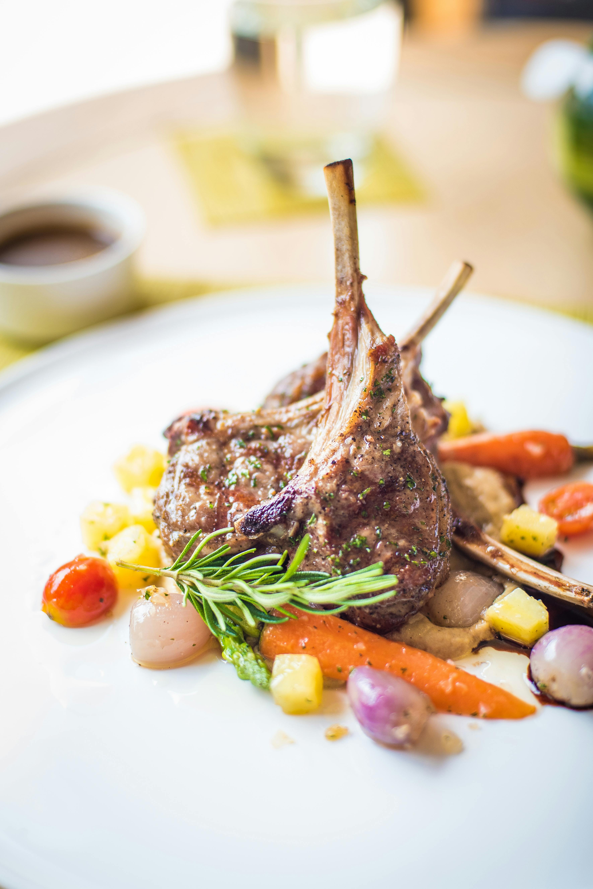

Food & Flavor
This book is a sensory-filled adventure into the hidden heart of every kitchen. This book uncovers the alchemy that transforms simple nourishment into an unforgettable experience. It celebrates the artistry of the palate, from the bustling spice markets of the East to the quiet elegance of a meal in Europe. For anyone who believes that eating is a grand adventure, this book is a delicious guide to discovering the world's most soulful secrets.
Php 450.00